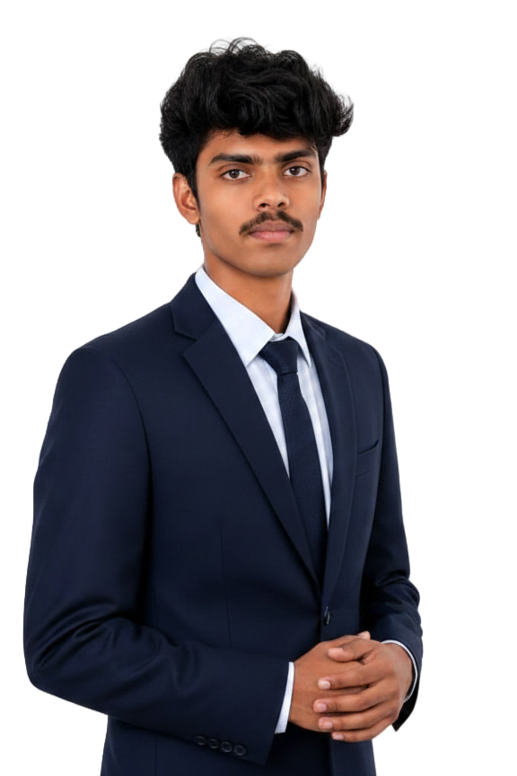

Hello! I'm Ramesh, a dedicated Bachelor of Computer Applications (BCA) student with a strong enthusiasm for the world of technology.
My interests lie in software development, programming, AI and web technologies. I am currently learning languages like Python, C, C++, Java, HTML, CSS, and JavaScript, and continuously working on improving my skills.
I enjoy building projects that solve real-world problems, and I'm looking for internship to apply what I’ve learned and gain practical experience.
Outside of academics, I enjoy exploring new tools, contributing to personal projects, and staying updated with the latest tech trends. I believe in lifelong learning and always strive to improve both personally and professionally.
